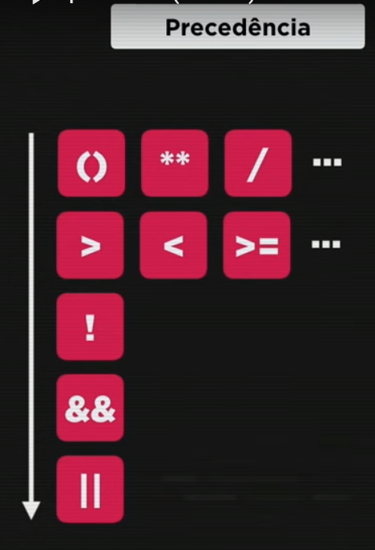

O resultado de qualquer expressão relacional será sempre um boolean (True) ou (False).
Obs.: o sinal '=' é de atribuição. O sinal '==' é de igualdade, se eles se equivalem. Já o sinal '===' é de identidade, se são identicos (inclusive mesmo tipo).
Obs.: A ordem de Precedência desses operadores é ! > && > || (ou seja, primeiro não, depois 'e' e por último 'ou').
Funciona muito parecido como um teste 'if'
(Esse teste está dizendo, caso a nota (uma variável) forma maior do que 7, o aluno estará aprovado. Do contrário estará reporvado).